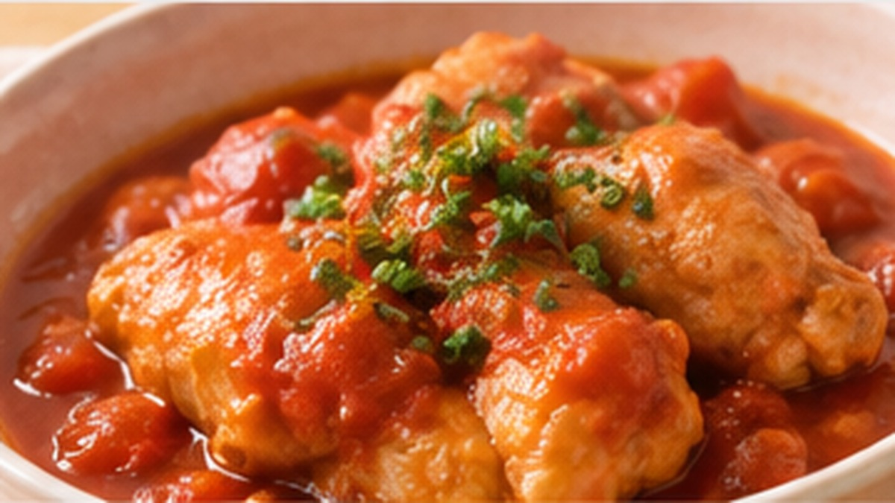
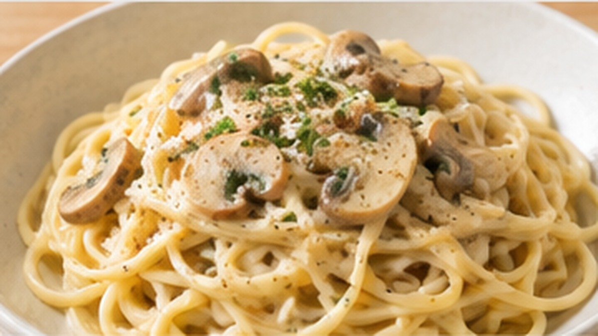
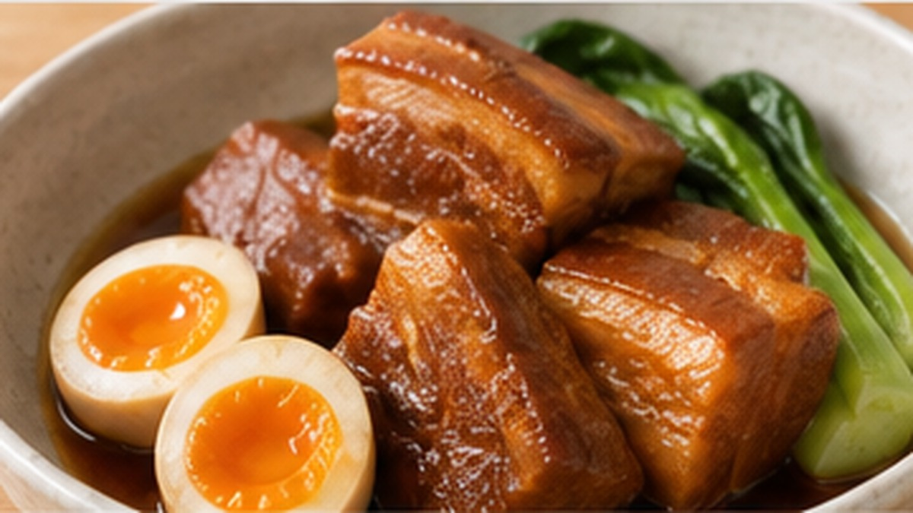
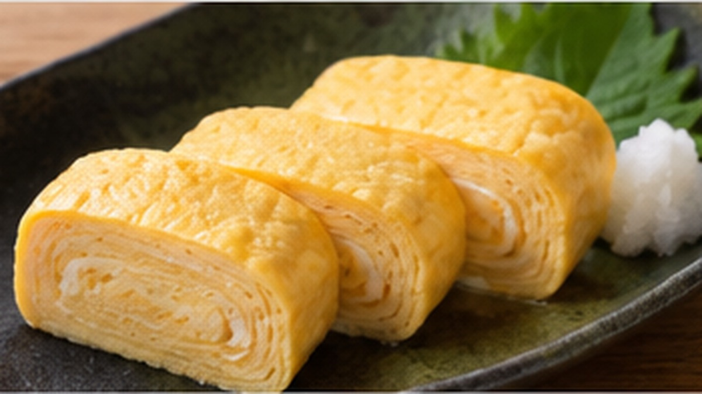
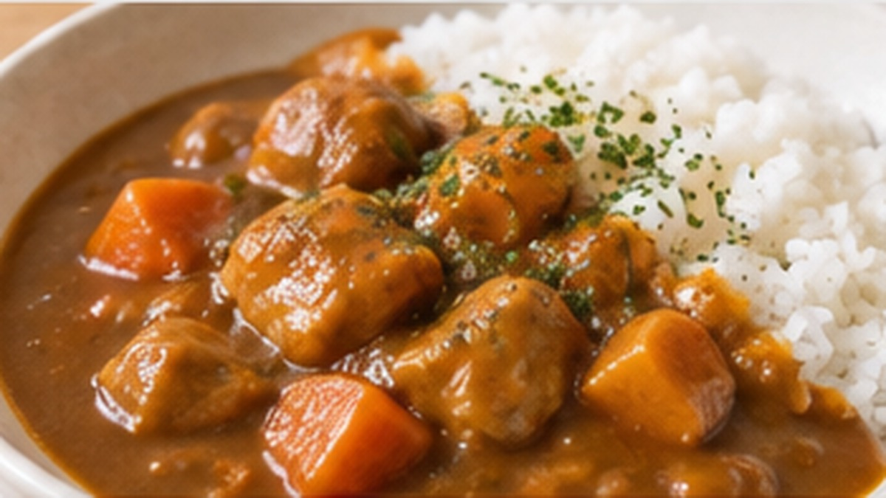
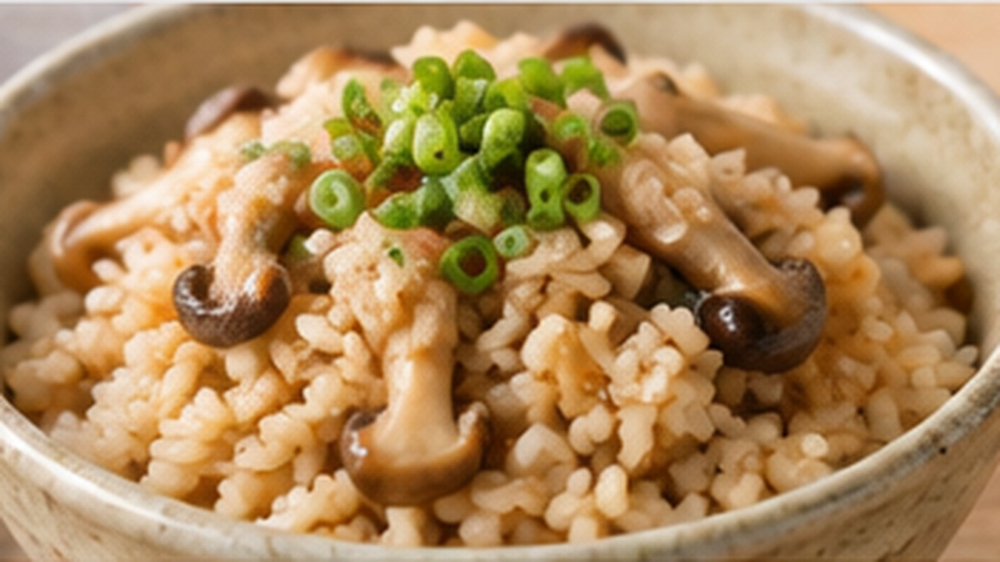

鶏肉のトマト煮
鶏もも肉をトマトのうまみでじっくり煮込む、やさしい味わいの一皿です。

きのこのクリームパスタ
3種のきのこの香りを生かした、まろやかなクリームパスタです。

豚の角煮
豚バラ肉をゆっくり煮て、甘辛い煮汁をしみ込ませた定番の和食です。

だし巻き卵
だしの風味をきかせ、ふんわりと焼き上げるやさしい味の卵焼きです。

チキンカレー
鶏肉と野菜をじっくり煮込んだ、毎日のごはんに合う家庭的なカレーです。

きのこの炊き込みご飯
きのこのうまみを米にしっかり含ませた、香り豊かな炊き込みご飯です。